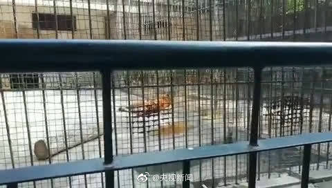

为了自身的生存食用其它物种是天经地义，自然界都是如此。但为了自己的乐趣虐待动物，真的没必要。@央视新闻:【不幸！#河南马戏团脱逃老虎已死亡#】今日，记者从河南新乡市动物园获悉，被捕获的脱逃老虎送到动物园时已死亡，老虎尸体已被冷藏等待鉴定。9月6日晚，在原阳县太平镇扁担王村南兴华学校门口，一马戏团的老虎在表演时翻出铁笼，下落不明。9月7日，警方通过麻醉手段将脱逃的老虎擒获。（大河报） 央视新闻的微博视频 412万次播放 00:11
 央视新闻的微博视频
央视新闻的微博视频